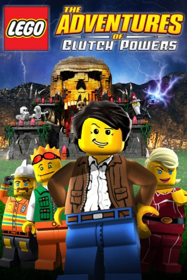

gesehen am 20.05.2015
gesehen am 20.05.2015Alternativ: Lego: The Adventures of Clutch Powers (Originaltitel) gesehen am 20.05.2015
 
 IMDB-Wertung: 5.8 / 10
IMDB-Wertung: 5.8 / 10  Metascore:
Metascore: 
Mit dem mutigen Action-Helden Clutch Powers und seinen unbezwingbaren Freunden! Gemeinsam begeben sie sich auf ein Abenteuer, das sie bis an den Rand des Universums auf den Gefängnisplaneten der Space Police führt. Um die Welt vor dem sicheren Untergang zu bewahren, müssen Clutch und seine Freunde sogar das magische Königreich Ashlar von der Herrschaft eines bösen Zauberers befreien - und ihr Können als LEGO-Baumeister im Kampf gegen eine unheimliche Skelett-Armee unter Beweis stellen. Egal, ob er gegen feuerspeiende Drachen oder riesige Höhlenmonster kämpfen muss - mit seinem Mut, seiner Fantasie und den farbenfrohen LEGO-Bausteinen l��st Clutch Powers einfach jedes Problem!
Jahr: 2010
Dauer: 78 Minuten
FSK:
Land: USA Studio: MidshipTonspuren:
Untertitel:
Auflösung: SD (704x384) Größe: 936 MB
Genre: Animation/Trick, Action, Abenteuer, Komödie, Familie, Fantasy, Sci-Fi
Regisseur: Howard E. Baker
Drehbuch: Tom Rogers, Joshua Wexler, Tom Rogers, Ole Kirk Christiansen, Godtfred Kirk Christiansen
Soundtrack: David Wurst, Eric Wurst
Darsteller:
 Yvonne Strahovski als Peg Mooring
Yvonne Strahovski als Peg Mooring Roger Rose als Brick Masterson
Roger Rose als Brick Masterson Jeff Bennett als Bernie von Beam / Artie Fol
Jeff Bennett als Bernie von Beam / Artie Fol Gregg Berger als Watch Commander / Rock Powers
Gregg Berger als Watch Commander / Rock Powers Chris Hardwick als Bones
Chris Hardwick als Bones Richard Doyle als Hogar the Troll
Richard Doyle als Hogar the TrollDatei: X:\Kinder Collections\LEGO\LEGO Die Abenteuer von Clutsch Powers (2010, FSK, 704x384).avi seit 12.03.2015
Festplatte: Kinder-Filme+Trick
 Es gibt insgesamt 34 Filme in der Gruppe 'Kinder Collections\LEGO'
Es gibt insgesamt 34 Filme in der Gruppe 'Kinder Collections\LEGO'